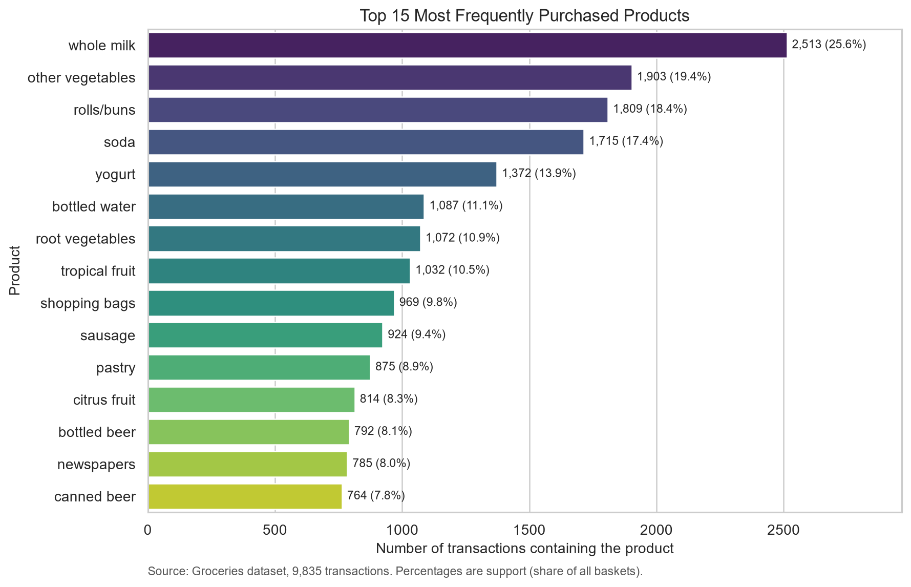
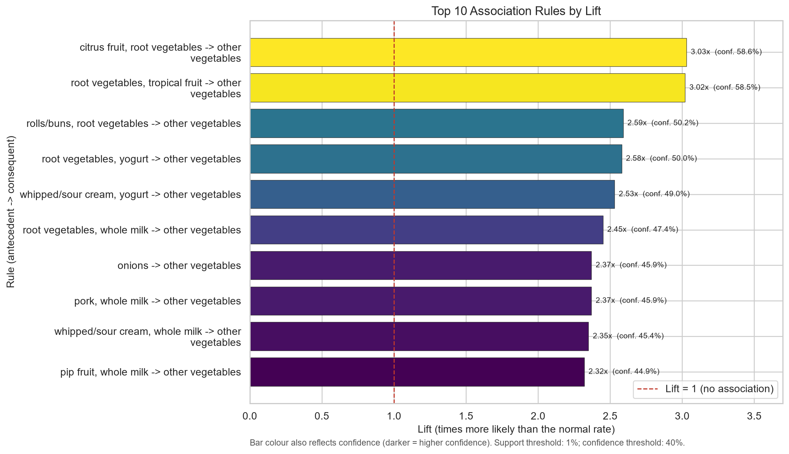
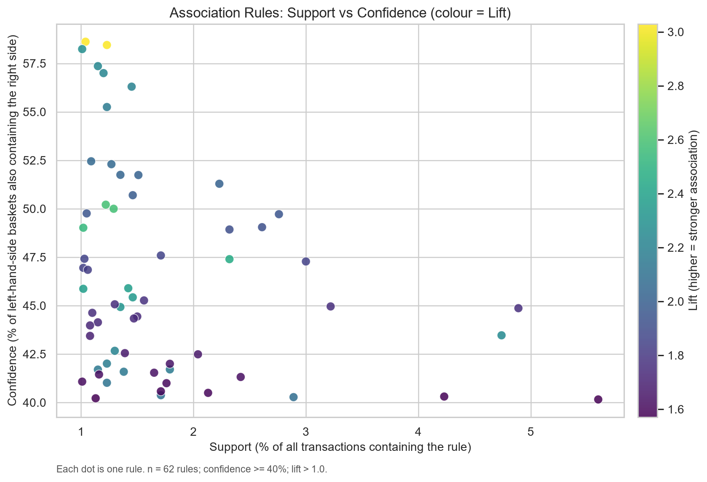

S
Support — how common?
Share of all baskets that contain the combination. Low support means the pattern is too rare to act on.
1.04% of 9,835 = 102 baskets
This project mines 9,835 real grocery baskets with the Apriori algorithm to uncover product pairs that appear together far more often than chance — the same idea behind “customers who bought this also bought…”. Written in plain language, with every number reproducible.
Python · pandas · mlxtend (Apriori) · matplotlib · 62 rules discovered
One bill tells you almost nothing. Ten thousand bills tell you which products have a habit of travelling together.
Market basket analysis treats each shopping bill as a basket of items. It then asks one question over and over: “when A is in the basket, how often is B there too?”
Patterns that survive a minimum frequency become association rules, written
{ pasta } → { tomato sauce }. Retailers use them for shelf placement, bundles, promotions
and “recommended for you” rows — but the same maths also powers fraud detection, medical co-occurrence
studies, and click-stream analysis.
This project uses the classic Groceries dataset: 9,835 anonymous transactions from a real supermarket, with 169 product categories — no prices, no customer IDs, just baskets.
Support, confidence and lift are the whole language of association rules. Here they are without the jargon.
Share of all baskets that contain the combination. Low support means the pattern is too rare to act on.
Of the baskets with the “if” part, how many also had the “then” part. It is the accuracy of the prediction.
Confidence divided by the product’s natural popularity. Above 1 means a real association; 1 means coincidence.
Pick the products you are buying. The lab shows the rules from this project that apply, using the real support, confidence and lift values.
Tap products to add or remove them.
Only 24 of the 62 discovered rules are loaded here to keep the demo light. The full table is in results/association_rules.csv.
Every chart is generated by the notebook and committed with the project, so nothing is hand-drawn.



Dots in the upper-right with a bright colour are the commercially interesting ones: common enough to matter, reliable enough to trust, and genuinely associated.
Support of each product on its own — the baseline every rule is measured against.
The notebook is a linear, reproducible pipeline — run it top to bottom and every output regenerates.
Python 3.10+, a virtual environment, and about a minute of patience.
# clone and enter git clone https://github.com/rajeshwarshingade/market-basket-analysis.git cd market-basket-analysis # environment (Windows PowerShell) python -m venv .venv .\.venv\Scripts\Activate.ps1 # install and launch pip install -r requirements.txt jupyter notebook
The notebook is committed already executed, so charts and tables are visible even before you run it. No dataset download needed — data/groceries.csv ships with the repo.